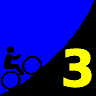
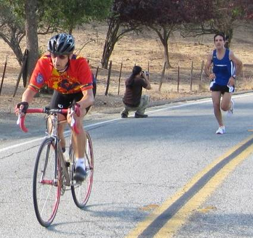

|  |
2008 Low-Key Hillclimbs Week 3 Results: Quimby Road (Murillo start) 18 Oct 2008 |
|  |
| Gary Gellin chasing down Christian Paquet towards the summit (Christine Holmes photo) |
Another gorgeous day was in store for Low-Key, as we revisited a favorite from Low-Key 1.0, Quimby Road. We did this climb in 1995, 1996, and 1998, so it was like visiting an old friend as we gathered at the Evergreen Valley High School near Ruby Road. Unfortunately, sprawl's toll moved our start-line further up the hill, but that just meant the quality came quicker. Notable on the day: Gary Gelman, an exceptional rider as well, showed why he's been so successful in trail runs this year by blitzing the climb, on foot, running better than 8-minute miles. Gary finished ahead of all but 19 of the riders today. Further up the road, was the first men's finisher, while was the first women's finisher on the day. That last section of Quimby is a tough one, as more than one rider commented. A really wonderful hill, one worth revisiting.
Thanks to coordinator Pat Parseghian, with help from Brenda Brunner, Barry Burr, Josh Hadley, Christine Holmes, Janet LaFleur, Lucia Mokres, and Adam Tow for making today's climb possible!median time = 27:55
pl # rider team category time mph fph score 1 210 Tim Clark Red Octane 35+ 20:50 9.50 4896 134.00 2 39 Clark Foy San Jose Bike Club 40+ 21:05 9.39 4838 132.41 3 217 Thomas Novikoff Cambio 2 21:51 9.06 4668 127.77 4 141 Carl A. Nielson Wells Fargo Racing Team 45+ 22:11 8.93 4598 125.85 5 54 Justin Lucke Google Vegan 22:24 8.84 4554 124.63 6 17 Brian Edwards Hell Riders 25-29 22:59 8.61 4438 121.46 7 62 Daryl Spano San Jose Bike Club 40+ 23:07 8.57 4412 120.76 8 213 Tom Gardin 35+ 23:20 8.49 4371 119.64 9 1 Dan Connelly Low-Key 3 23:32 8.41 4334 118.63 10 315 Ken Gallardo Pen Velo/Kondra 30+ 23:46 8.33 4292 117.46 11 585 Michael Barnes 24:11 8.19 4218 115.44 12 284 John Walker Google 40+ 24:46 7.99 4118 112.72 13 20 James Porter Western Wheelers Out Of Shape Dads 25:00 7.92 4080 111.67 14 812 Ken Mejica Road Divas 30+ 25:07 7.88 4061 111.15 15 124 Jeff Farnsworth San Jose Bike Club 50+ 25:27 7.78 4008 109.69 16 35 Ron Brunner Low-Key Commuter 25:36 7.73 3984 109.05 17 444 Ernesto Castillo Chain Reaction 30+ 25:42 7.70 3969 108.63 18 415 Sam Beal Chain Reaction 25:49 7.67 3951 108.13 19 307 Christian Paquet Doogie 50+ 25:52 7.65 3943 107.93 20 402 Gary Gellin Sisters of No Mercy Runner 25:53 7.65 3941 107.86R 21 290 Mike Schuster Google 40+ 25:54 7.64 3938 107.79 22 518 Carmelo Rios Fighting Bobas 5 26:00 7.62 3923 107.37 23 67 Martin Hyland Western Wheelers 50+ 26:13 7.55 3891 106.48 24 452 Bruce Gardner Monta Vista Velo 35+ 26:43 7.41 3818 104.49 25 273 Calvin Do Skinny slow guys 35+ 26:48 7.39 3806 104.17 26 421 Matt Wocasek Bike Trip 4 26:50 7.38 3801 104.04 27 29 Dean Larson Team Dino 40+ 26:56 7.35 3787 103.65 28 609 Franz Kelsch Utah Velo 60+ 27:20 7.24 3732 102.13 29 283 Dan Talayco Two Wheel Tango GoatIbex 27:21 7.24 3729 102.07 30 237 Bill Preucel Sisters of No Mercy 45+ 27:23 7.23 3725 101.95 31 804 Marco Palmeri 25-29 27:52 7.11 3660 100.18 32 602 Ramon Ochoa Bike Forums 35+ 27:58 7.08 3647 99.82 33 397 Michael Williams Sisters of No Mercy 35+ 28:02 7.06 3639 99.58 34 579 Jonathan Walden 28:12 7.02 3617 99.00 35 806 Ko Ihara Nvidia 25-29 28:19 6.99 3602 98.59 36 236 Paul Melville Doogie 55+ 28:23 6.98 3594 98.36 37 272 Martin Hampton Pen Velo/Kondra 28:30 6.95 3579 97.95 38 441 Ilyas Elkin Nvidia 25-29 28:38 6.92 3562 97.50 39 140 Gary Griffin Bike Trip 55+ 28:39 6.91 3560 97.44 40 365 Gino Cetani Western Wheelers 35+ 28:42 6.90 3554 97.27 41 455 Erik Strom Mud 'n' Crud 28:47 6.88 3544 96.99 42 810 Alexander Garza Monta Vista Velo 55+ 29:31 6.71 3456 94.58 43 34 Stephen Fong Blubber Busters 5 29:56 6.61 3408 93.26 44 110 Edward Miller SLACer 65+ 30:39 6.46 3328 91.08 45 591 Neal Herman Team Spike 31:03 6.38 3285 89.91 46 337 Bruce Swanson Leafy Joe 45+ 31:21 6.32 3254 89.05 47 469 Mat Davidson RoadBikeReview 31:49 6.22 3206 87.74 48 351 Jeff Swan Team Spike 32:38 6.07 3126 85.55 49 408 Richard Contreras 33:12 5.96 3072 84.09 50 229 Michael Czepiel Apple 20-24 33:48 5.86 3018 82.59 51 811 Parag Gupta Nvidia 35+ 33:50 5.85 3015 82.51 52 464 Eric Sorenson Bike Forums 30+ 34:35 5.73 2949 80.72 53 801 Kley Cardona ACTC 45+ 34:52 5.68 2925 80.07 54 336 Ed Noskowski Leafy Joe 45+ 35:13 5.62 2896 79.27 55 809 Phil Dubach Western Wheelers 35+ 35:35 5.56 2867 78.45 56 615 Bob Corman Team Spike 35:51 5.52 2845 77.87 57 601 Dick Kiser Bike Outfitter 60+ 37:10 5.33 2744 75.11 58 800 Michael Ahern LGBRC 40+ 37:45 5.25 2702 73.95 59 15 Rich Brunner Cruzie 39ish 41:11 4.81 2477 67.79 60 380 Fred Butts Low-Key 65+ 44:32 4.45 2290 62.69 61 348 Carl Butler Sisters of No Mercy 50+ 50:14 3.94 2031 55.57 62 807 Kelly Heil Leafy Joe 45+ 51:43 3.83 1972 53.98 R : runner
median time = 34:30
pl # rider team category time mph fph score 1 240 Janet Martinez Sisters of No Mercy 40+ 28:48 6.88 3542 119.76 2 445 Mei Xi Mud 'n' Crud 29:08 6.80 3501 118.39 3 394 Holly Harris Sisters of No Mercy 45+ 29:35 6.69 3448 116.59 4 256 Alison Chaiken Sisters of No Mercy 40+ 32:56 6.01 3097 104.73 5 438 Helen Moore Western Wheelers 40+ 36:03 5.49 2829 95.68 6 515 Melissa Griffiths 36:57 5.36 2760 93.35 7 249 Judith Alderman Road Divas 35+ 38:48 5.10 2629 88.90 8 489 Tamara Cracknell Google 30+ 41:38 4.76 2450 82.85
pl team score scoring 1 San Jose Bike Club 362.87 (Clark Foy, Daryl Spano, Jeff Farnsworth) 2 Google 345.13 (Justin Lucke, John Walker, Mike Schuster) 3 Sisters of No Mercy 344.21 (Janet Martinez, Holly Harris, Gary Gellin) 4 Western Wheelers 315.42 (James Porter, Martin Hyland, Gino Cetani) 5 Low-Key 290.36 (Dan Connelly, Ron Brunner, Fred Butts) 6 Nvidia 278.60 (Ko Ihara, Ilyas Elkin, Parag Gupta) 7 Team Spike 253.33 (Neal Herman, Jeff Swan, Bob Corman) 8 Leafy Joe 222.30 (Bruce Swanson, Ed Noskowski, Kelly Heil) 9 Chain Reaction 216.76 (Ernesto Castillo, Sam Beal) 10 Pen Velo/Kondra 215.41 (Ken Gallardo, Martin Hampton) 11 Mud 'n' Crud 215.38 (Mei Xi, Erik Strom) 12 Doogie 206.28 (Christian Paquet, Paul Melville) 13 Bike Trip 201.48 (Matt Wocasek, Gary Griffin) 14 Road Divas 200.04 (Ken Mejica, Judith Alderman) 15 Monta Vista Velo 199.07 (Bruce Gardner, Alexander Garza) 16 Bike Forums 180.54 (Ramon Ochoa, Eric Sorenson) 17 Red Octane 134.00 (Tim Clark) 18 Cambio 127.77 (Thomas Novikoff) 19 Wells Fargo Racing Team 125.85 (Carl A. Nielson) 20 Hell Riders 121.46 (Brian Edwards) 21 Fighting Bobas 107.37 (Carmelo Rios) 22 Skinny slow guys 104.17 (Calvin Do) 23 Team Dino 103.65 (Dean Larson) 24 Utah Velo 102.13 (Franz Kelsch) 25 Two Wheel Tango 102.07 (Dan Talayco) 26 Blubber Busters 93.26 (Stephen Fong) 27 SLACer 91.08 (Edward Miller) 28 RoadBikeReview 87.74 (Mat Davidson) 29 Apple 82.59 (Michael Czepiel) 30 ACTC 80.07 (Kley Cardona) 31 Bike Outfitter 75.11 (Dick Kiser) 32 LGBRC 73.95 (Michael Ahern) 33 Cruzie 67.79 (Rich Brunner)